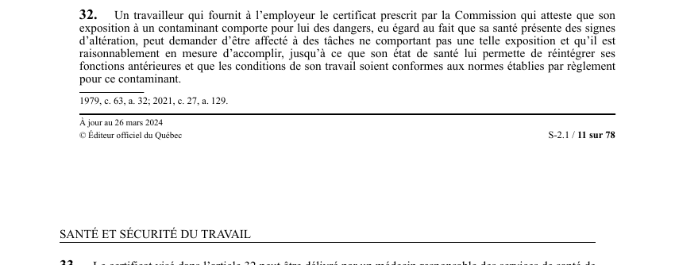

art-32-LSST : retrait préventif pour contaminant
Un article du wiki ⚖️ Recueil législatif
En bref
Le travailleur qui fournit un certificat attestant que son exposition à un contaminant comporte pour lui des dangers peut demander d'être affecté à des tâches sans. Il s'agit d'une obligation.
- Jusqu'à ce que son état de santé lui permette de réintégrer ses fonctions.
- Jusqu'à ce que l'état de santé permette la réintégration.
🌐 LegisQuébec · 📄 PDF officiel (page 11)
Texte officiel : capture du PDF

Toucher l'image pour l'agrandir🔗 Ouvrir a cette page : LSST.pdf : page 11 · texte a jour au 26 mars 2024
Voir aussi
- art. 30 : protection travailleur contre représailles · faculté : l'employeur ne peut congédier, suspendre, déplacer ni sanctionner un travailleur pour avoir exercé le droit de refus prévu à l'article 12 ; toutefois, dans les 10 jours d'une décision finale, une sanction est possible si le droit a été exercé de façon abusive.
- art. 31 : protection représentant prévention · faculté : l'employeur ne peut congédier, suspendre, déplacer ni sanctionner le représentant à la prévention pour l'exercice de ses fonctions légales ; dans les 10 jours d'une décision finale sur un refus, une sanction est possible si la fonction a été exercée de façon abusive.
- art. 33 : délivrance certificat retrait préventif · obligation : le certificat peut être délivré par le médecin responsable des services de santé de l'établissement, par un autre médecin ou par une infirmière praticienne spécialisée ; si le certificat n'est pas délivré par le médecin responsable.
- art. 34 : règlements retrait préventif CNESST · faculté : la CNESST peut par règlement identifier les contaminants donnant droit au retrait préventif, déterminer les critères d'altération de la santé associés à chacun, préciser les critères de retrait et de réintégration du travailleur à son poste.
- 🔧 Modifié par : LMRSST · Article modificateur de la LMRSST.
- ↑ Loi : LSST
Pages qui pointent ici (18)
- 🎯 Démarrage rapide, conseiller SST Droit du travail
- art-129-LMRSST : modifie l'art. 32 LSST Recueil législatif
- art-30-LSST : protection travailleur contre représailles Recueil législatif
- art-31-LSST : protection représentant prévention Recueil législatif
- art-33-LSST : délivrance certificat retrait préventif Recueil législatif
- art-34-LSST : règlements retrait préventif CNESST Recueil législatif
- Démarrage rapide - Travailleur Recueil législatif
- Droits et recours du travailleur Droit du travail
- Index par profil Recueil législatif
- LMRSST : Chapitre II : Modifications à la LSST Recueil législatif
- LSST Recueil législatif
- LSST : Chapitre II : Droits et obligations Recueil législatif
- LSST : Chapitre III : Droit de refus et retrait préventif Recueil législatif
- LSST, droits et obligations Droit du travail
- PDFs de jurisprudence et de doctrine Recueil législatif
- Régime CNESST Droit du travail
- Retrait préventif Recueil législatif
- TPN Recueil législatif